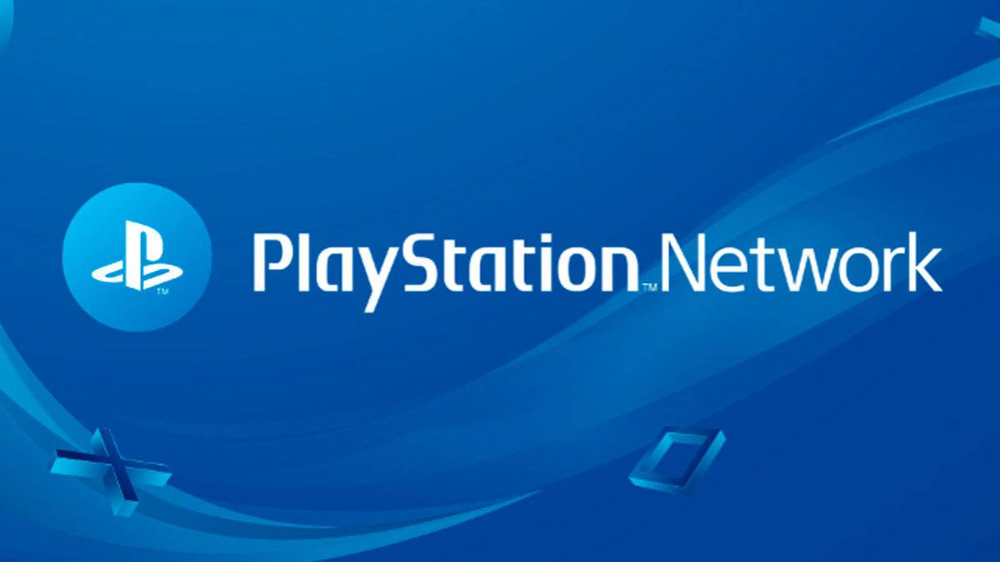
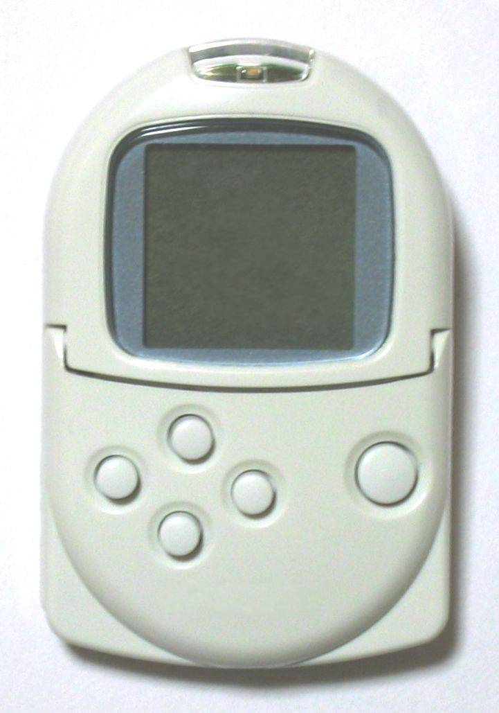
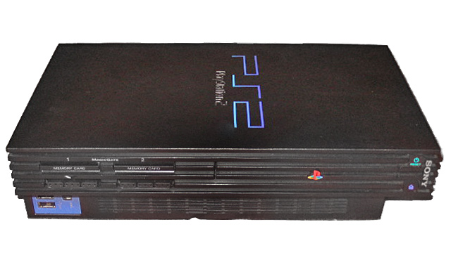
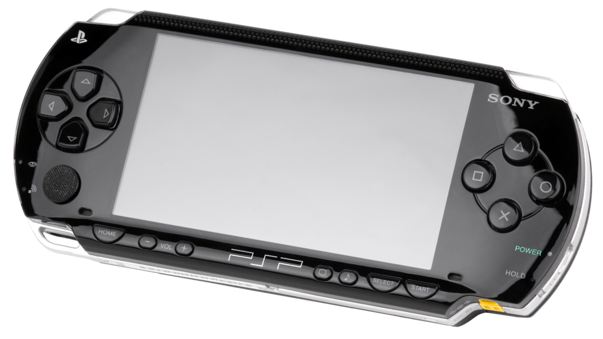
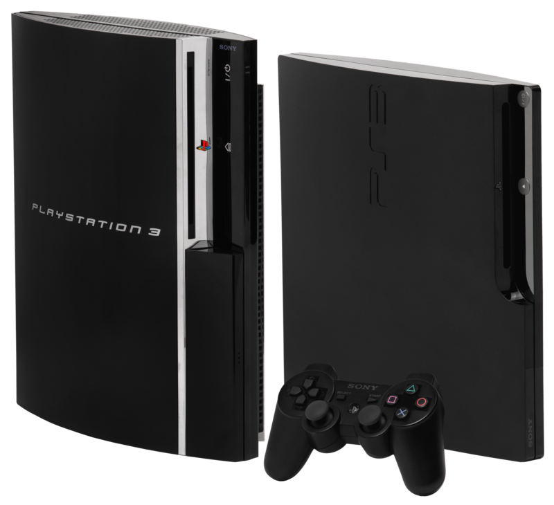
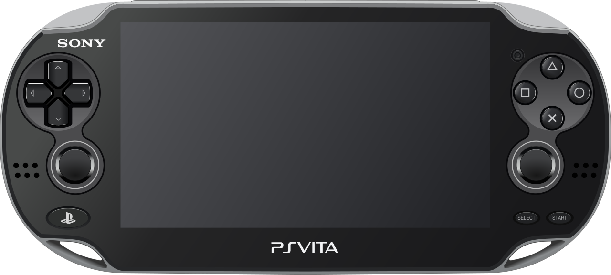
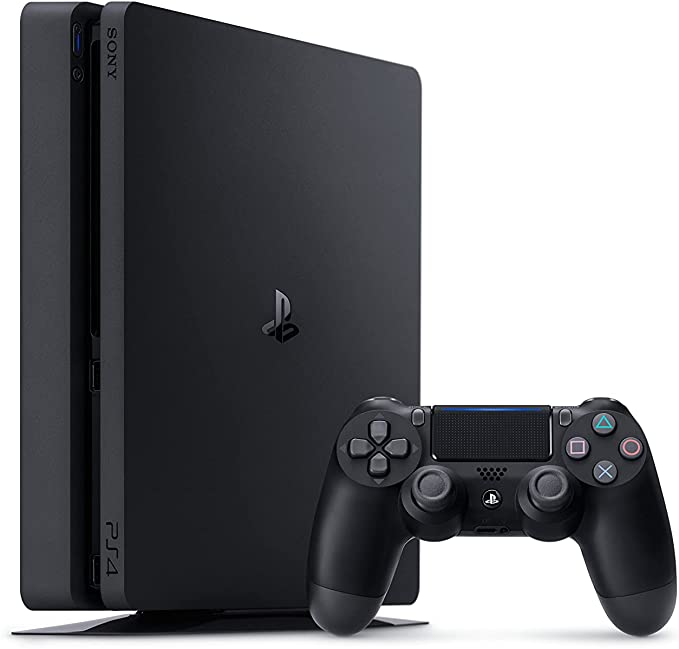
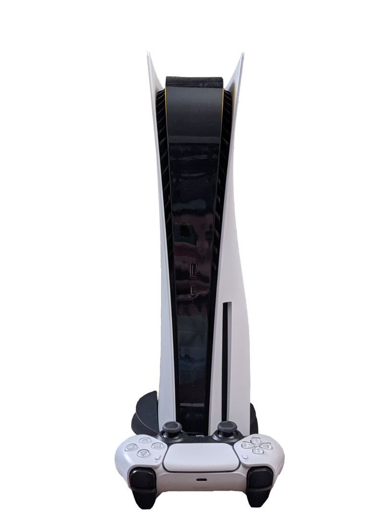

PlayStation (Comúnmente abreviado como PS) es el nombre de una serie de consolas de videojuegos creadas y desarrolladas por Sony Interactive Entertainment. Han estado presentes en la quinta, sexta, séptima, octava y novena generación de videoconsolas, la compañía promotora está actualmente en el mercado con su PlayStation 5. La marca se introdujo por primera vez el 3 de diciembre de 1994 en Japón y ha desarrollado y publicado cinco videoconsolas de sobremesa, que incluyen un centro de medios de comunicación y un servicio en línea, posteriormente se introdujeron revistas y computadoras. La primera consola de la serie, fue PlayStation, que también fue la primera en vender 100 millones de unidades. Su sucesora, PlayStation 2, es la segunda consola de la serie, y la más vendida de la historia hasta la fecha, alcanzando más de 155 millones de unidades vendidas, llegando a estar en el mercado por 13 años. PlayStation 3, ha vendido más de 87 millones de consolas en todo el mundo,después le sigue PlayStation 4 lanzada en 2013 & 2014 con 118 millones de unidades vendidas como la tercera consola en superar dicho formato Y la más reciente consola de Sony, PlayStation 5, lanzada en noviembre de 2020, ha llegado a las 10,1 millones de unidades.
La primera consola portátil de la marca fue PocketStation, que se lanzó en Japón en 1999, aunque se pretendía lanzar en el resto del mundo, pero debido a sus bajas ventas la consola solo llegó a Japón, y fue descontinuada en 2002 por Sony. Aunque la consola logró llegar a algunas partes fuera de Japón, como Sudamérica y algunos lugares de Europa. Su segunda videoconsola portátil fue PlayStation Portable (PSP) que hasta 2014 logró vender 80 millones de unidades, haciendo que Sony volviera al mercado portátil luego de que no les fue muy bien con PocketStation. Su sucesor fue llamado PlayStation Vita siendo la tercera y última portátil de Sony, que vendió 16 millones de unidades a 2018, pero la consola fue descontinuada en 2019 a nivel mundial debido a sus bajas ventas.
¿Quien fue el creador de la PlayStation?
Ken Kutaragi(nacido el 2 de agosto de 1950) es el exdirector y director ejecutivo de Sony Computer Entertainment (SCEI), la división de videojuegos de Sony Corporation. Se le conoce como "El Padre de la PlayStation" y sus sucesores y spin-offs, como la PlayStation 2, PocketStation, PlayStation 3, y PlayStation Portable. Ken Kutaragi actualmente es el director ejecutivo de Cellius. Los analistas financieros que controlan las pérdidas y ganancias de Sony Corporation han vigilado mucho a Kutaragi. Eso se atribuye al hecho de que la franquicia PlayStation ha dado muchos beneficios a Sony.
El éxito comercial de la franquicia PlayStation hace a la división Sony Computer Entertainment la unidad de negocio con más beneficios de Sony. Aunque es una novata en el mercado de las consolas contra veteranos como Nintendo y Sega, la primera PlayStation las desplazó de ser las consolas más populares de su era. La PlayStation 2 extendió el liderazgo de Sony durante la siguiente generación, hasta el punto de controlar el 65% del mercado con 100 millones de unidades lanzadas. Se reconoció a Ken por su éxito principalmente por muchas revistas tecnológicas y financieras, más notablemente fue nombrado uno de los 100 personajes más influyentes del 2004 en la revista Time y el "Gutenberg of Video Games".
PlayStation Network, abreviado como PSN, es una plataforma desarrollada por Sony Computer Entertainment para la venta de contenidos digitales y el soporte del juego en línea accesible mediante los sistema PlayStation 3, PlayStation 4, PlayStation 5, PS Vita y PlayStation Vita TV (PlayStation TV) así como desde la web PlayStation.com. Desde 2019 hay más de 94 millones de usuarios registrados en PlayStation Network en todo el mundo.
Desde ya el 2000 la consola PlayStation 2 podía conectarse a internet, aunque su servicio en línea no se llamaba PlayStation Network (psn), pero no fue hasta el 11 de mayo de 2005 donde Sony incorporó a su segunda sobremesa el sistema en línea PS Network aunque hoy en día ya no se encuentra disponible desde hace ya muchos años. Y algunos juegos fueron compatibles como Resident Evil 4, Metal Gear Solid 3: Snake Eater, Metal Gear Solid 3: Subsistence, entre otros juegos. El 15 de mayo de 2006, Sony anunció un servicio en línea unificada para el sistema PlayStation 3 en la reunión de 2006 PlayStation Business Briefing en Tokio, cuyo título provisional era PlayStation Network Platform. En el Tokyo Game Show del 21 de septiembre de 2006, se reveló que los usuarios podrían descargar algunos de los títulos de PlayStation y PSP desde la PlayStation Network. El 8 de mayo de 2007 Sony Computer Entertainment anunció las PlayStation Network Cards, una manera de ingresar dinero en el monedero electrónico de la cuenta sin la necesidad de hacer una transferencia bancaria. Cada billete contiene un código alfanumérico de 12 caracteres que puede ser introducido en la PlayStation Network para recargar el saldo de la cuenta.
El 21 de abril de 2011 se iniciaron operaciones de mantenimiento no programadas inicialmente, dejando el servicio inoperativo. El mantenimiento se alargó sin ningún motivo aparente para los usuarios hasta el 27 de abril, cuando Sony anunció mediante un comunicado una intrusión no autorizada ilegal entre el 17 y el 19 de abril. Esta intrusión comprometió la información personal de los usuarios, y posiblemente, la información de las tarjetas de crédito utilizadas para la compra en PlayStation Store.
El 16 de mayo de 2011, Sony confirmó que PlayStation Network volvería a ponerse en funcionamiento, aunque sólo de manera parcial. PlayStation Store no fue reactivada, pero sí el juego en línea. Los servidores de los Estados Unidos y Latinoamérica fueron los primeros en habilitarse y, al final del día, en Europa. Sin embargo, en Japón no estuvo disponible PSN en ese día, bajo orden del gobierno japonés, a la espera de mostrar resultados que demuestren que PSN es totalmente seguro.
El 31 de mayo de 2011, PlayStation Store volvió a abrirse en América y Europa. Sony puso a disposición de los jugadores el pack llamado "Welcome Back" (Bienvenido de nuevo) que incluía un mes gratis de suscripción a PlayStation Plus y dos juegos de PS3 a escoger de entre cinco (o dos juegos de una lista de cinco para PSP). A principios de junio del mismo año, fue abierta la PSN japonesa, así como la Store para ese país.
La asociación de consumidores FACUA exigió ante la Agencia Española de Protección de Datos que se investigue a Sony, dado que la red no contaba con suficientes medidas de seguridad para proteger los datos de los usuarios. Estimó que la cantidad de usuarios españoles afectados fueron 330.000, y les aconsejó que den de baja inmediatamente sus tarjetas de crédito. Para evitar futuros robos de tarjetas se recomendó el uso de gift cards. La intrusión a la base de datos de los usuarios, se realizó con una "técnica muy sofisticada", según los responsables de la compañía, en la cual los crackers, lograron encubrirlo como una compra en la plataforma en línea, por lo que los sistemas de seguridad no detectaron la intrusión, y tras pasar del servidor web, lograron explotar una vulnerabilidad del servidor de aplicaciones para instalar software, que más tarde fue usado para acceder al servidor de la base de datos, protegido por un tercer firewall. La vulnerabilidad explotada, era desconocida por Sony.Mediante ésta vulnerabilidad explotada en los sistemas de la empresa, se obtuvieron 10 millones de números de tarjetas de créditos, Sony asegura que estaban cifrados, y sin almacenar los códigos de seguridad.
| Nombre de la consola | Definicion | Ilustracion |
|---|---|---|
| PlayStation | PlayStation se considera la videoconsola más exitosa de la quinta generación tanto en ventas, como en popularidad. Además de la original se lanzaron dos versiones más, la Net Yaroze y la PSone. Tuvo gran éxito en emplear el CD-ROM dentro de su hardware, a pesar de que otras compañías ya lo habían empleado, tales como: SEGA (Sega CD), Panasonic (3DO), Phillips (CD-i), Snk (Neo Geo CD). Dichas compañías tuvieron poco éxito al emplear el CD-ROM como soporte para almacenar juegos. Se estima que en todo el mundo Sony logró vender 104,25 millones de unidades de su videoconsola en 10 años. Fue descontinuada en 2006, y su último título fue FIFA Football 2005. | |
| PocketStation | PocketStation es la primera videoconsola portátil de videojuegos creada por Sony en 1999, que fue enfocada a ser una tarjeta de memoria interactiva, exclusivamente lanzada en Japón, el 23 de enero de 1999 para PlayStation, creada como respuesta al VMU de Dreamcast, y competencia a la Game Boy Color de Nintendo, y la Neo Geo Pocket Color de SNK. Contiene una pantalla LCD, altavoces, un reloj de tiempo real e infrarrojos. |  |
| PlayStation 2 | Una de las principales características distintivas son su procesador central conocido como Emotion Engine y su controlador de Dualshock 2. También el equipo incorpora un lector de DVD y 2 puertos USB 1.0 (algunos controladores utilizan estos puertos). En la versión PlayStation 2 Slim se incorporó un puerto Ethernet para que pueda ser utilizado el servicio de internet Central Station. El mismo puerto puede ser agregado a las versiones originales de la consola y fue la primera consola con disco duro, además, mucha gente formateo la Playstation 2 para grabar un juego en un DVD virgen y así poder jugarlos en la Ps2. Algunos juegos incorporan la posibilidad de jugar a través de una red de área local (LAN), lo que permite además jugar por internet a través del sistema gratuito XLink Kai. Desde el año 2000 hasta el año 2013, rompió el récord como la videoconsola más vendida de la historia. Tras 12 años en el mercado, siendo una de las consolas más longevas de la historia. Fue descontinuada el 11 de enero de 2013, siendo su último juego FIFA 14 |  |
| PlayStation Portable | La PlayStation Portable o PSP es una videoconsola portátil de la multinacional de origen japonés, Sony Computer Entertainment, para videojuegos y multimedia. Se trata de la primera consola portátil a nivel mundial de Sony y la segunda lanzada en Japón y China. La consola PSP cambió la tendencia de hacer cada vez aparatos portátiles más pequeños, sacando al mercado una consola con una pantalla mayor y convirtiéndose en la segunda consola portátil con un D stick (después de la Neo Geo Pocket). El firmware actual de la consola es el 6.61, donde se ha mejorado la estabilidad del software del sistema durante el uso de algunas características. |  |
| PlayStation 3 | La PS3 se presentó en el año 2005.No llevaron una versión funcional del sistema, debido a cortes de electricidad y problemas de hardware, ni en el Tokyo Game Show de septiembre de 2005, aunque se hicieron demostraciones (como del juego Metal Gear Solid 4: Guns of the Patriots) mostrando en ambos eventos el kit de desarrollo de software. También se mostraron secuencias de vídeo basadas en las especificaciones pronosticadas. Sin embargo, posteriormente se reveló que las demostraciones de juegos no estaban funcionando en tiempo real sobre la máquina y utilizaron diversos trucos de post-producción. |  |
| PlayStation Vita | PlayStation Vita, también conocida como PS Vita, es una videoconsola portátil creada por Sony Computer Entertainment, es la sucesora de PlayStation Portable y es parte de la familia PlayStation de videoconsolas. Fue presentada el 27 de enero de 2011 y puesta a la venta el día 17 de diciembre del mismo año en Japón. La llegada a Europa y toda América fue el 22 de febrero de 2012. Inicialmente, estaba destinada a competir directamente con la consola de Nintendo 3DS. El firmware actual de la consola es el 3.71, donde se ha mejorado el rendimiento del sistema. En septiembre de 2018, Sony anunció que la consola dejaría de producirse en Japón durante el año 2019 |  |
| PlayStation 4 | Su lanzamiento fue el 15 de noviembre de 2013 en Estados Unidos y en Europa y Sudamérica fue el 29 de noviembre de 2013. Cuenta con una memoria Ram 8 veces más potente que la de la PlayStation 3. Esta consola compite con Wii U y Switch de Nintendo y Xbox One de Microsoft. |  | PlayStation 5 | Sony PlayStation, Sony hizo oficial el nombre de su consola de próxima generación, la cual fue llamada PlayStation 5, la empresa a su vez, afirmó que incluirá nueva tecnología y mejoras en los controles. De acuerdo con Cerny, la consola usará el procesador Ryzen de AMD con la arquitectura Zen 2 de 7 nm y con una GPU de la familia Navi de Radeon que incluye soporte para el renderizado de trazado de rayos en tiempo real, y aún sería compatible con medios físicos. La nueva consola cuenta con almacenamiento SSD, ya que Cerny enfatizó la necesidad de tiempos de carga rápidos y mayor ancho de banda para que los videojuegos sean más inmersivos, así como para admitir la transmisión de contenido requerida del disco para resoluciones gráficas de 8K. Cerny afirma que la nueva consola es totalmente compatible con los títulos de PlayStation 4 y PlayStation VR, e indica que la transición a la nueva consola es suave |  |
 .
.
Durante 25 años Sony se ha dedicado al desarrollo de juegos exclusivos para sus diferentes consolas, logrando crear sagas muy conocidas en el mundo de los videojuegos y dándole a Sony y su marca de PlayStation prestigio en el ámbito, algunas sagas son:
Asimismo Sony ha desarrollado varios juegos que están pensados para ser futuras sagas como los es The Last of Us desarrollado por Naughty Dog, del cual salió para PlayStation 3 en 2013 y en PlayStation 4 para 2014, logrando unas ventas combinadas de más de 17 millones de copias hasta el mes de abril de 2018. La secuela llamada The Last of Us Part II está pensado para salir en el primer trimestre de 2020. En septiembre del 2018 fue lanzado para PlayStation 4, Spider-Man desarrollado por Insomniac Games, para agosto de 2019 se confirmó que el juego ha logrado vender más de 13 millones de unidades, ya hay planes para una secuela. Mientras que Guerrilla Games en febrero del 2017 lanzó un juego llamado Horizon Zero Dawn para PlayStation 4, que se sitúa en un mundo post apocalíptico, el 28 de febrero del 2019 se confirmó que Horizon Zero Dawn había logrado superar los 10 millones de copias vendidas.